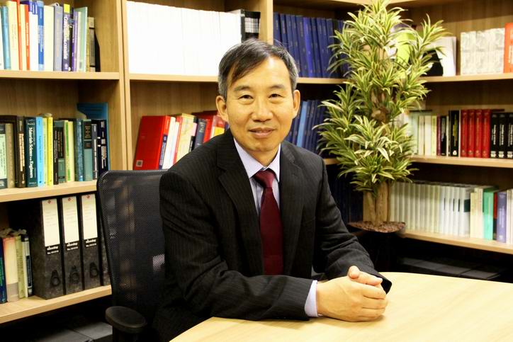
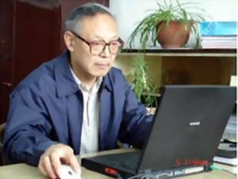

Chairman Introduction

Professor Jianguo Lin, Fellow of Royal Academy of Engineering (FREng), is a TATA Steel and Royal Academy of Engineering Research Chair and Head of Mechanics of Materials Division, Department of Mechanical Engineering, Imperial College London, UK. He is the Director of AVIC Centre for structural design and manufacture, Director of AVIC Centre for materials characterisation, processing and modelling, Director of CALT Advanced Manufacturing Laboratory.
Professor Lin's research expertise is in Materials and Process modelling, Solid/Computational Mechanics, which includes micro-mechanics modelling, and its application in creep-damage, cyclic-plasticity-damage, viscoplasticity and advanced materials processing technologies.
He joined Imperial College from the University of Birmingham in 2008 and established a Metal-forming and Materials Modelling Group at Imperial. The Group has an international reputation in developing new metal forming processes, multiscale materials and process modelling. Specifically, the Group have patented new hot stamping processes for Steel and Aluminium. He is a Founder and the Director of Impression Technologies Ltd (a Spin-off company of Imperial College), which is resulted from one of his patented techniques on hot stamping of high strength aluminium alloys.
 Professor Hodgson spent 16 years in the BHP Research Laboratories before joining Deakin University in 1996. Prior to joining Deakin his main areas of research were thermomechanical processing of steels, microstructure modelling and new alloy and process developments. Since joining Deakin his research has broadened to include sheet metal forming, the forming and post forming behaviour of advanced high strength steels, nanostructured metals, biomaterials and surface engineering. He has over 700 research publications and has presented more than 50 keynote lectures at international conferences related to the physical metallurgy and modelling of steels. In 2004 Professor Hodgson was made one of the inaugural Alfred Deakin Professors and also awarded a Federation Fellowship from the Australian Research Council. He received a Doctoris Honoris Causa from the University of Valenciennes in France for contributions to metal forming in 2005 and a Faculty Medal from AGH Poland in 2006 for contributions to Materials Science.
Professor Hodgson spent 16 years in the BHP Research Laboratories before joining Deakin University in 1996. Prior to joining Deakin his main areas of research were thermomechanical processing of steels, microstructure modelling and new alloy and process developments. Since joining Deakin his research has broadened to include sheet metal forming, the forming and post forming behaviour of advanced high strength steels, nanostructured metals, biomaterials and surface engineering. He has over 700 research publications and has presented more than 50 keynote lectures at international conferences related to the physical metallurgy and modelling of steels. In 2004 Professor Hodgson was made one of the inaugural Alfred Deakin Professors and also awarded a Federation Fellowship from the Australian Research Council. He received a Doctoris Honoris Causa from the University of Valenciennes in France for contributions to metal forming in 2005 and a Faculty Medal from AGH Poland in 2006 for contributions to Materials Science.
In June 2009 Professor Hodgson was awarded an Australian Laureate Fellowship, for research related to sustainable metal production and transport systems. He has established a large number of international research collaborations and partnerships. In particular, he established DIRI – the Deakin India Research Initiative to provide Doctoral programs in country (India) and then the Deakin – TERI Institute for Nano-Biotechnology in Dehli. This international engagement broadened in 2011 when he was made a Distinguished Professor of the Wuhan University for Science and Technology in China and subsequently a 100 Talent of the Hubei province and a 1000 talent of the central government of China. His current focus is in developing major strategic research partnerships for Deakin with academia and industry.

Dr. Mingtu Ma , male, senior engineer and vice chief engineer in Chinese Automotive Engineering Research Institute Co. Ltd now. He also serves as the vice president in materials branch of Society of Automotive Engineers of China, the vice chairman in materials branch of Chinese Mechanical Engineering Society, chairman or members of organizing committees for a number of international conferences, and members in academic councils of some state key laboratories, etc.
Dr. Ma has obtained a variety of achievements and reputations in the research of dual phase steel. He firstly represented the strength of dual phase steel using non-continuous fiber reinforced mixing law instead of the earlier continuous viewpoints, and concluded a new expression of mixing law for dual steel, which significantly improved the strength theory of dual phase steel. He published the first professional monograph entitled “Dual phase steel-physical and mechanical metallurgy” in the world, which was regarded as classical work in this field.
Dr. Ma also focused on the Bauschinger effect in the processing of metallic alloys and dual phase steel, and earned brilliant progress using the method of coupling mechanics and magnetic parameters(coercivity). In the case of cooperating with Professor Y. Tomoto, he published the monograph named “The Bauschinger effect in metallic alloys and its industrial application”, which was also the first technical book in this area.In the research of novel spring steel, Dr. Ma improved a series of high strength as well as high toughness spring steels, specialized the test method for relaxation resistance proposed a simple-feasible test method, in which the representation parameters can be explained by straightforward physical meaning. Recently, He successfully applied the new spring steel in the manufacture of railway elastic spring strip, as a result, the materials cost was reduced, while the applying reliability was also improved. This research finally facilitated the increase of train’s speed.Dr. Ma is also interested in the research of HSLA steel, and has published the classical book entitled “Micro alloyed steel-physical and mechanical metallurgy”, that has played an important role to accelerate the application of micro alloy steel in China. Dr. Ma has published more than 250 science and technical articles in various influential journals, Meanwhile, he also the author of 6 personal and 2 cooperated monographs.
So far, Dr. Ma has obtained 1 National Invent Award, more than 30 ministry or province Science Progress Awards, and more than 10 patents, etc.